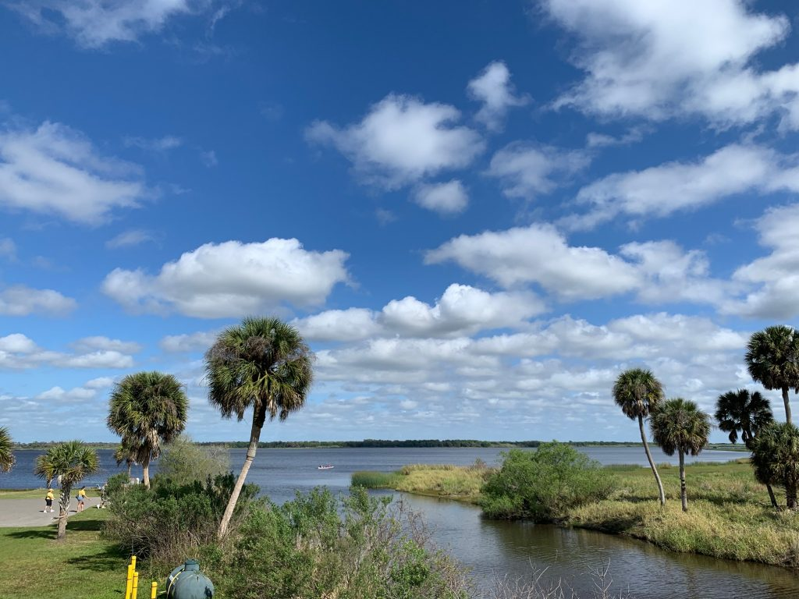
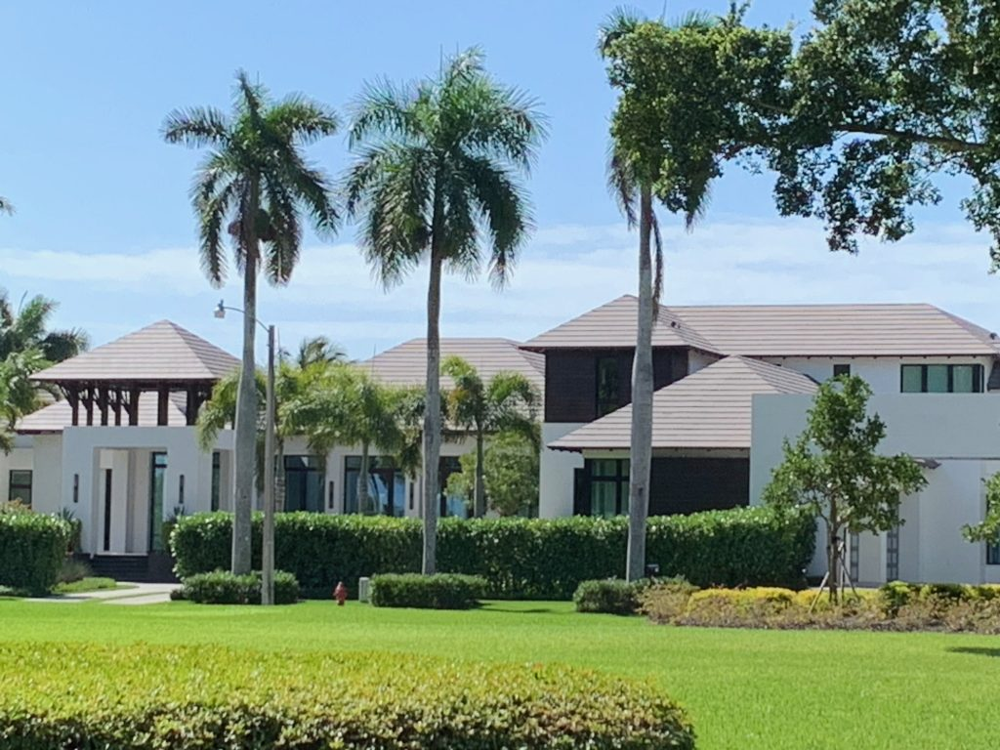
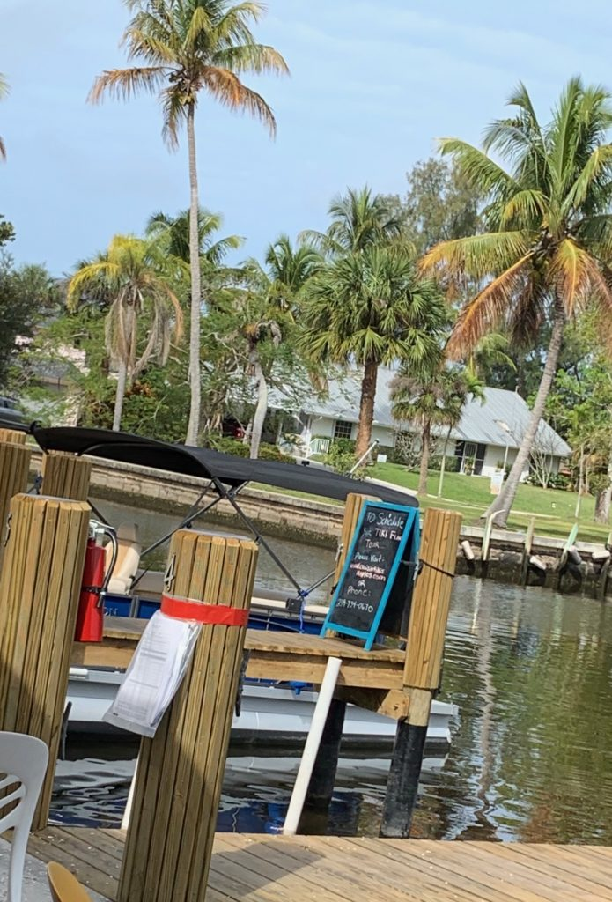
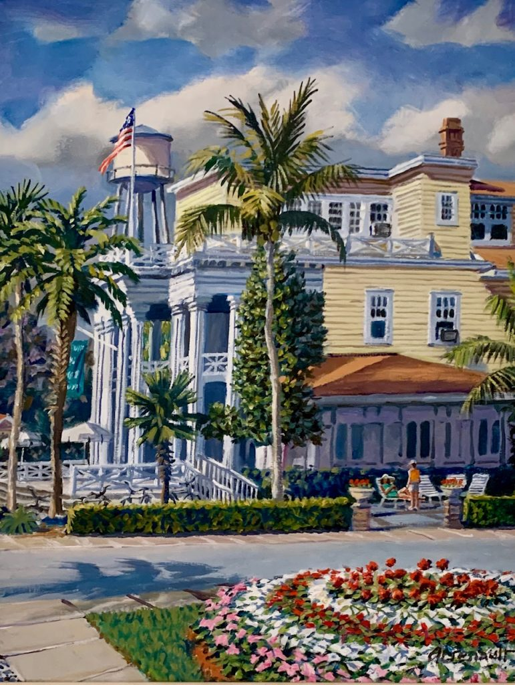
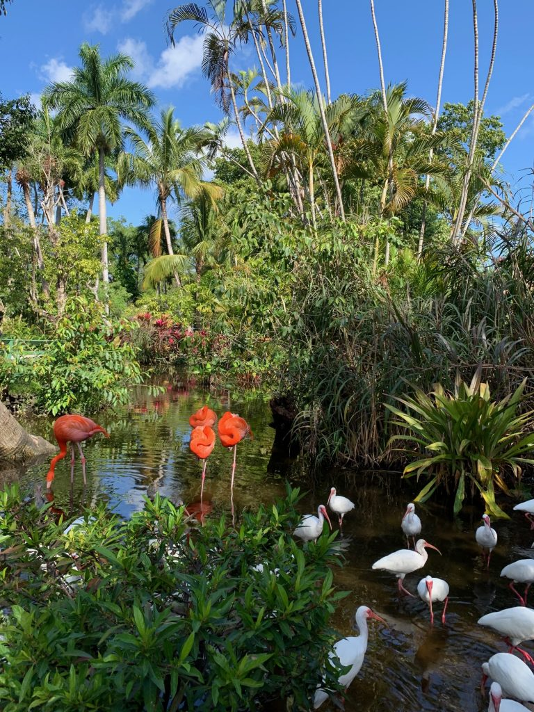
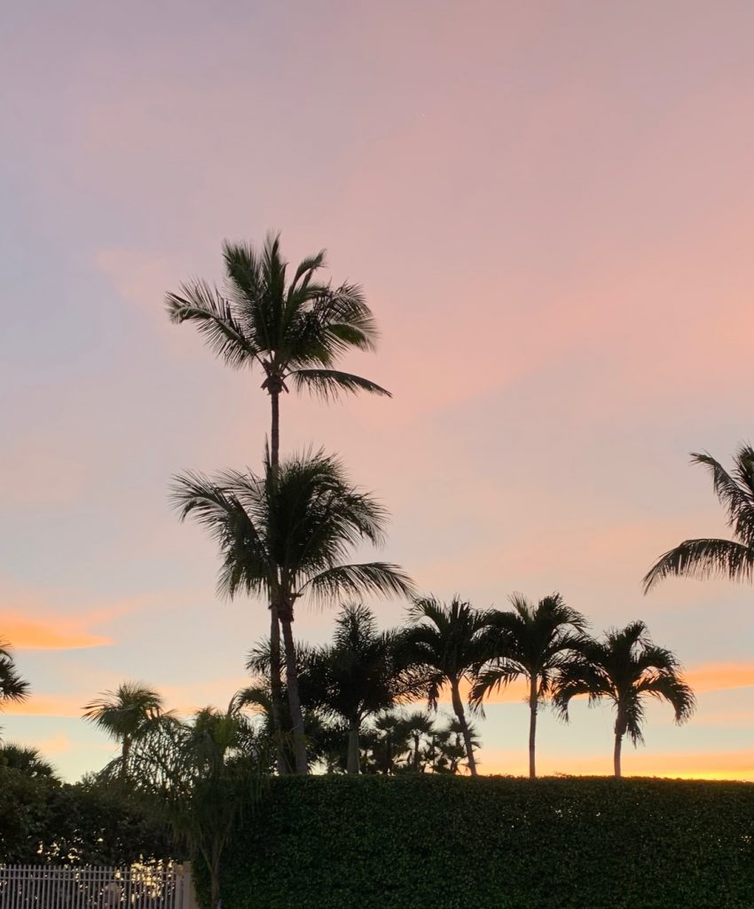
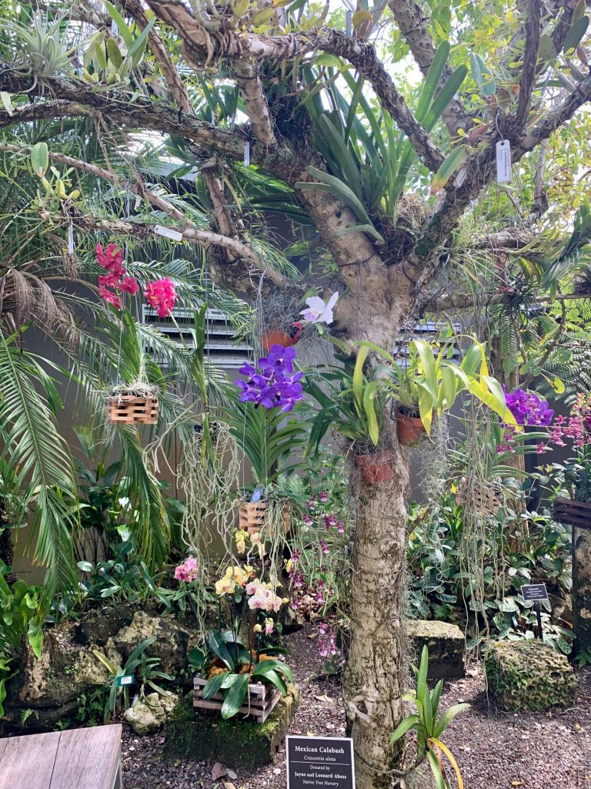
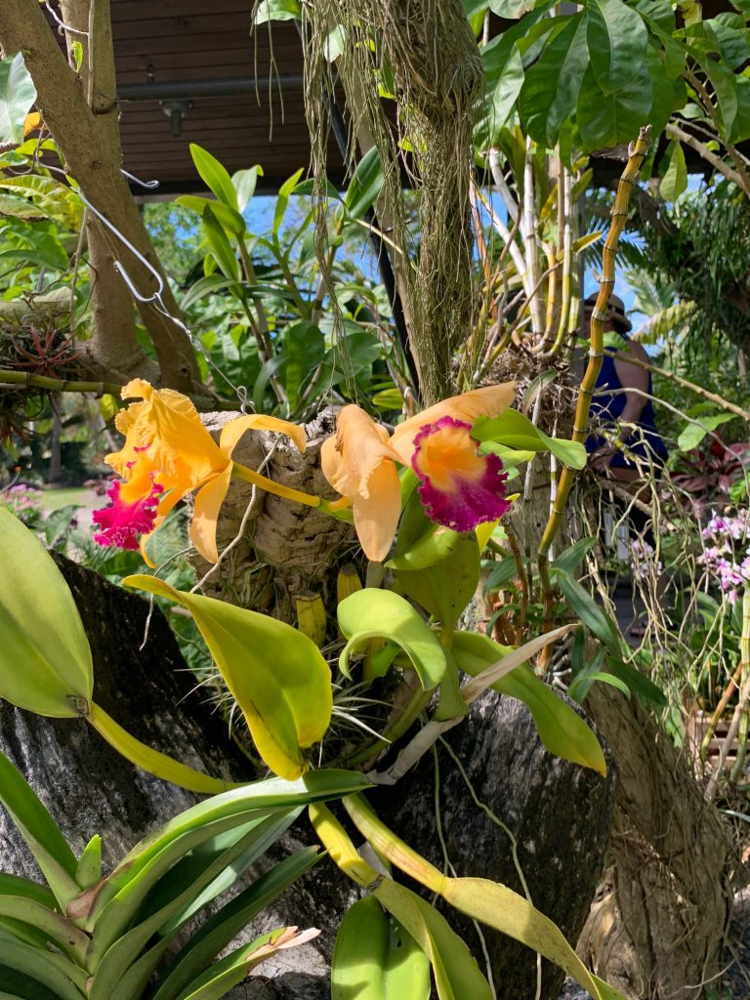
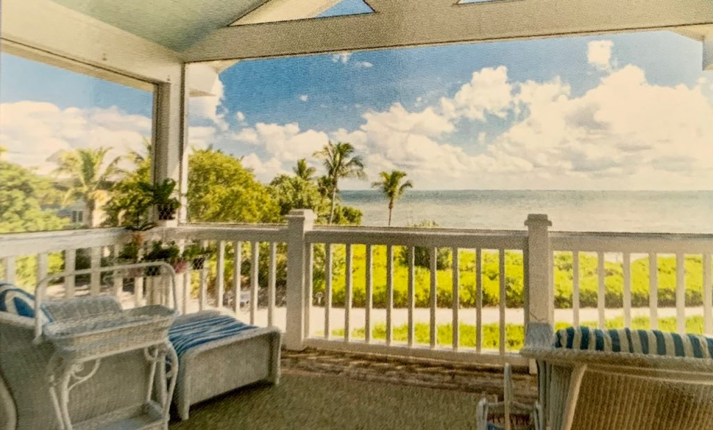
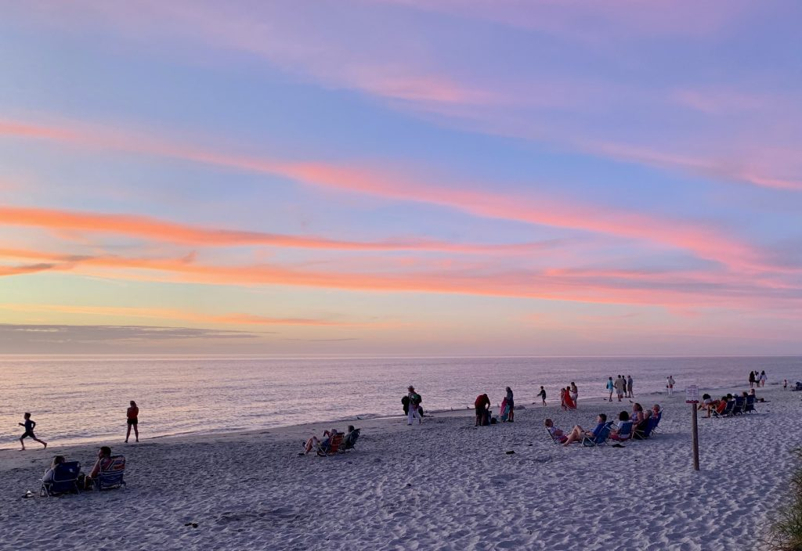

By Lucia Adams

Florida, florido, full of flowers, the fastest growing state in the country with its blue coastal waters and predictable sun is being invaded by fresh new battalions of refugees from the north nowhere more so than on the Gulf Coast. In 2020 the pace has quickened, the word is really and truly out not just in the Midwest but the Northeast and Canada, the crowd crush and building thrusting forward ineluctably. In six months claiming Florida residency they can take advantage of big breaks on homestead exemptions, low property tax rates and no state sales tax.
Naples has a year-round population of 23,000, doubling during the season, but including the entire Naples-Marco Island, Florida Metropolitan Statistical Area, the population (increasing 10% over the previous couple of years), now numbers 350,000. Everything is mobbed and over-priced including the rather ordinary restaurants and flat- as-a- pancake golf courses, the traffic execrable.
In this our tenth winter in Naples editorials in the local Daily News (printed in Sarasota bidding sad farewells this February to press operators and old Wifag polytype machines) grapple with growth, crackling with friction between developers and a city council struggling to preserve What’s Left. Beach restoration, declining water quality, dangerous bike lanes and building building building. Right across from the Ritz where we were staying two 18 story towers are in the works about to demolish the funky beach bars, the old yellow motel the Lighthouse Inn, and even older Buzz’s fish house on Vanderbilt Road. Au revoir to the few remnants of charm and personality. Cranes also pierce the sky above Port Royal and Pelican Bay adding more concrete to the kikuyu grass and pink hibiscus and seemingly inhabited only by construction workers and landscapers working for flippers who sell as soon as the project is finished.

The reason everyone is here is of course: The Weather, sublime, perfect, heartbreakingly lovely in the subtropical southwest, the sunshine strong, the rays arriving at a steep angle with a high degree of ultraviolet radiation, more intense and consistent than on the Atlantic coast or farther north in Sarasota often cooler by 10-20 degrees. You don’t have to be Madame de Stael to know how climate affects personality as the retired CEOs and their inevitable wives know, packing the beaches at sunset and attending the many churches, nearer my God to thee, but I find Naples monotonous and homogenous. It was no doubt less suburban and really enchanting for the thousand or so Neopolitans in the 50s fishing village with its dandy British West Indies bungalows, so few remaining.

Breakfast on the dock of the bay
The Romance of the Everglades sustained me here in years past, exploring the largest sub-tropical forest in North America listed as endangered by UNESCO, a refuge and a delight with tales of outlaws and glades men and of course Totch in the 10,000 Islands. Today the Glades, already half its original size, is continuing to die from salinity, its flora and fauna rapidly disappearing as the freshwater River of Grass is invaded by salt water, and parched of fresh water the wildlife habitat are disappearing as I have sadly witnessed over a decade.

This year Trump authorized $250 million to the Army Corps of Engineers for Everglades restoration to supplement the state’s 625 million however much the plan 30 years and eight billion dollars later has made little progress. Fresh water is still not flowing into the sawgrass prairie. Even on our annual airboat ride the red mangroves looked diminished (no birds no gators) and only a few raccoons begging for food. Unfortunately we couldn’t make it over to Palm Beach for the ForEverglades benefit February 15th at the Breakers to join the Marshall Fields, Ken Griffith, Beau Wrigley, David Moscow.

To further escape Warholian uniformity we took the usual day trips to Lake Okeechobee past the sugar factories and poor settlements and to Arcadia in cracker country, aggressively blue collar just like Everglades City. The Historic District has a few nice early 20th century structures one housing a Trump T- shirt store and a blood and guts bar which could have been Eureka, Arkansas of recent memory. Endless antique stores with collectible teapots, cigar store Indians and Confederate flags.

Myakka River State Park had fewer roseate spoonbills, anhingas, blue herons, osprey, egrets and no snarling alligators rushing our pontoon boat as in past years. Nor could we find a single gator in Corkscrew Swamp Sanctuary and there was one lone anhinga on the two mile boardwalk winding through the11,000 acres as Audubon watchers left disappointed. Our one natural highlight this year was spotting the nostrils of a true blue manatee popping up from the murky water of the Gordon River while waiting for a Nature Conservancy boat tour…which we learned was All Booked Up like everything else. On a cheerier note: in the mid-90s panthers in the southwest numbered just six but are now coming back after years of loss of habitat and shortsighted developers and politicians. Florida’s wildlife preservationists wisely imported Texas cougars which bred with the Florida panther now estimated to number 150-250 strong.

Despite the insane growth and disturbing affluence Naples remains beautiful (the only word that will do). There is still a genuine orange grove, the Naples Citrus Grove grandfathered to one family into the Picayune Strand State Forest’s cypress and pine trees where the “swampland in Florida” scam took place in the heart of the Big Cypress Basin, under water during the wet season starting in March. This is the southernmost grove in the state the cooling winds aiding ripening farther north; it is manned by Haitian immigrants who travel two hours a day-each way- to work.

We’ll return to Florida next winter but it will be two hours north past gritty Port Charlotte docks and Punta Gorda to tiny Boca Grande on Gasparilla barrier island north of Captiva — more genteel, from another less populous time offering a peek into grand days in Olde Florida and reminding me of resort towns in the Adirondacks, Maine, even my childhood Montauk. The destination is the pink and green interior of the Gasparilla Inn, listed on the National Register of Historic Places, its rooms, adjacent cottages, compounds, built in 1913 when Boca Grande was a deepwater port; from 1907 to 1979, a railroad ran through it center carrying phosphate to ships at the island’s southern end. That railroad brought winter visitors—the du Ponts, the Rockefellers, the Astors among them.

Some of their descendants still winter here as names and photos in the Boca Beacon reveal. Edison and Ford in their Fort Myers days, Katharine Hepburn visiting her Houghton family, some Bushes, spent the season here — no rowdy Kennedys. Gulf-front mansions still stand, and thanks to strict historic preservation rules forbidding structures over 38 feet with mandates of no more than five residential units per acre the island is pretty much intact. The Pete Dye golf course has spectacular maritime views and there’s a regulation English Rule croquet court.
